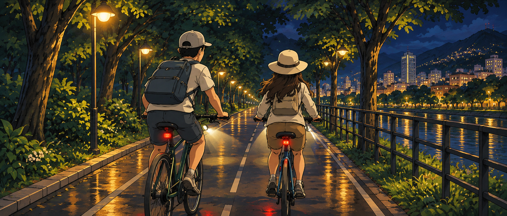
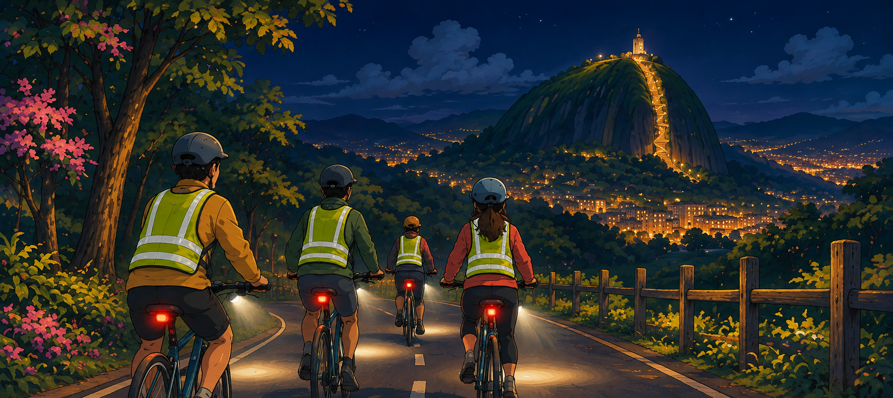
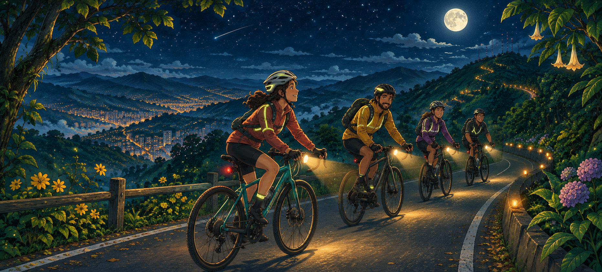

Bicicleta urbana
Cómoda para la ciudad
Una compañera práctica para disfrutar un paseo tranquilo por las calles iluminadas.
Módulo de demostración · Bootstrap
Una pequeña muestra de bicicletas, luces y rutas para recorrer Medellín con Rueda Libre.
Reserva tu bicicleta Volver a Rueda Nocturna
Una experiencia sobre dos ruedas
Un módulo corto construido con componentes Bootstrap.

Una compañera práctica para disfrutar un paseo tranquilo por las calles iluminadas.

Casco, luces LED y chaleco reflectivo acompañan cada recorrido nocturno.

Elige tu nivel y disfruta Medellín acompañado por una persona guía.